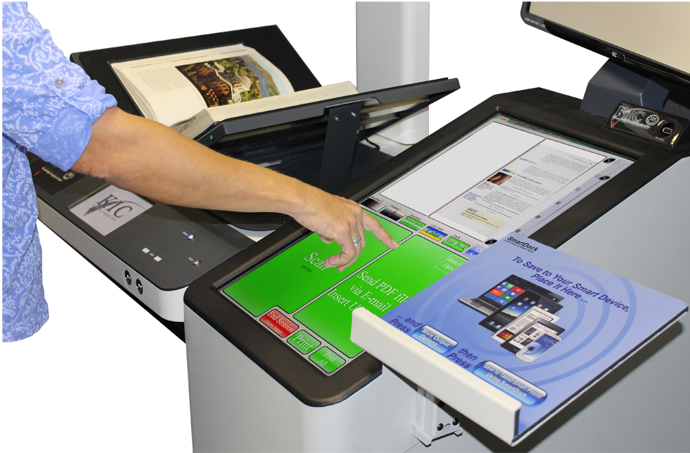

KIC Software


KIC System Software
KIC stands for Knowledge Information Center and it is self-serve scanning that's faaster, easier and more efficient that self-serve coping.
KIC a powerful and indispendable study and research tool that lets users scan books, documents and even looseleaf materials quickly and efficiently and save the digital images to USB, Cloud, Smart Devices and more.
Enhance reports and papers with crystal-clear color and black & white pictures, graphs, and scerpt from books, magazines and journals. Save to searchable PDF, quick PDF, JPG, audio file and more.